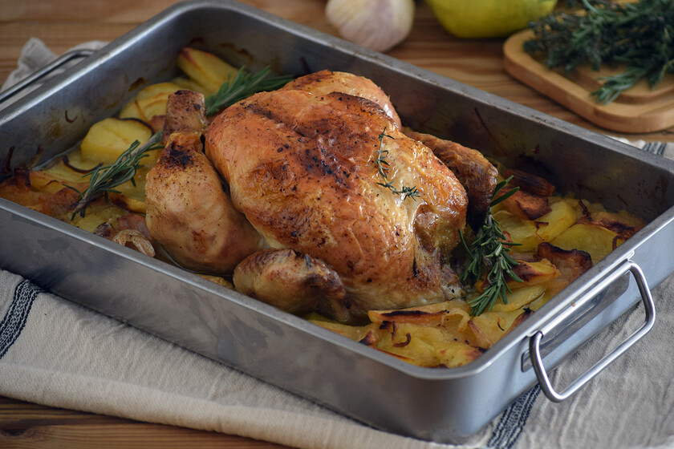

Pollo al Horno

Descripción
El pollo asado o al horno es una de las recetas de pollo más sencillas, y además una de las más sabrosas y económicas.
Uno de esos platos que podríamos decir que forman parte de la cultura gastronómica mundial. Ya que en casi todas las sociedades existe una receta de pollo asado. Ya sea con unas salsas u otras, con piel o sin ella, con hierbas varias, especias, vegetales, cítricos, licores o no… esta receta de pollo al horno está dentro de la gastronomía global como uno de sus platos por excelencia.
Básicamente se trata de cocinar el pollo en sus propios jugos y grasa, acompañado o aderezado con hierbas aromáticas y/o vegetales. La forma ideal de cocinarlos es en los asadores rotatorios. Ya sabéis, esos en los que el pollo es atravesado por un hierro que lo hace girar, permitiendo así que sus jugos y su grasa se vayan extendiendo por toda la pieza. Pero en casa lo más habitual es que utilicemos el horno para asarlo, dejando el pollo en una bandeja y sometiéndolo a la fuente de calor durante un tiempo determinado.
A pesar de lo sencillo de esta receta existen múltiples variantes y esta versión es básica y muy fácil, pero garantiza una carne jugosa, muy sabrosa y con una piel extra crujiente. En el blog tenéis alguna receta más con pollo al horno, aunque no entero como en este caso, desde los tradicionales muslos de pollo, en este caso al limón o con una de mis partes favoritas, las famosas alitas al horno con salsa barbacoa.
Si os sobra podéis hacer unas deliciosas croquetas de pollo, las que tenemos con los restos de este pollo asado, una sopa de picadillo de pollo o un relleno para una lasaña de pollo increíble. El resultado con el pollo entero es excepcional, si os pasa como a mí os será difícil dejar de disfrutar de esta receta, os aseguro que está de rechupete.
Ingredientes
- 1 pollo de corral (de unos 1.600 g. aproximadamente)
- 1 Limón
- 60 ml. aceite de oliva virgen extra
- 1 cucharada sopera de tomillo seco
- 3 dientes de ajo
- Sal y pimienta negra recién molida (al gusto de cada casa).
- 4 patatas medianas (una por persona)
- Opcional (para acompañar) una ensalada de unos buenos tomates con un aliño de aceite de oliva virgen extra, orégano, sal en escamas y un poquito de vinagre.
Preparación del Pollo
- Lo primero que hacemos es limpiar el pollo de posibles restos de grasa y vísceras que pueda tener. Pondremos especial cuidado en retirar las plumitas que le puedan haber quedado. El pollo tiene que entrar bien seco al horno para que en el proceso de horneado no comience cociéndose, lo que queremos es que se haga bien horneado.
- En un mortero machacamos la pimienta negra y la sal. Con esta mezcla untamos bien el pollo por todas partes, tanto dentro como fuera. Cortamos el limón por la mitad y exprimimos un poco de su jugo por encima y dentro del pollo. Reservamos el resto del limón.
- En un vaso mezclamos el aceite con el tomillo. Con la ayuda de un pincel de cocina pintamos el pollo con la mezcla por dentro y por fuera. Reservamos el aceite de oliva virgen extra sobrante.
- UColocamos el pollo en la bandeja de horneado y metemos las mitades de limones en su interior. Añadimos también los dientes de ajo pelados y aplastados dentro del pollo.
- Pelamos las patatas, las cortamos en rodajas y las repartimos por la bandeja. Regamos tanto el pollo como las patatas con el aceite con tomillo sobrante.
Horneado
- Con el horno previamente caliente a 190º C horneamos durante 1 hora y 15 minutos. Lo mejor es que lo hagáis en la bandeja del medio con temperatura arriba-abajo y aire. Tened cuidado porque cada horno es un mundo y el tuyo puede necesitar variar la temperatura. Lo mejor es tapar el pollo con papel de aluminio a media cocción, es decir, cuando el pollo lleve 30 minutos aproximadamente.
- Los últimos 15 minutos lo quitamos para tostar la piel y que quede súper crujiente. Antes de servir el pollo lo dejamos reposar fuera del horno tapado de nuevo con el papel de aluminio con el que lo hemos tapado en el horno.
- Trinchamos el pollo con un buen cuchillo. Muy sencillo, en seis piezas. Primero, los dos cuartos traseros (muslo y contramuslo) hasta llegar a la unión de esta pieza con la carcasa. Después, las dos alas. Y, finalmente, las pechugas.
- Para esta operación, se busca el esternón y se desliza el cuchillo rebañando toda la carne y despegándola del costillar. Primero una y luego la otra. Y con lo que queda, siempre habrá carne suficiente en la carcasa para unas buenas croquetas de pollo.
- Lo servimos acompañado de las patatas asadas y un poco de ensalada. A mí me encanta con tomate crudo, aceite de oliva virgen extra y un toque de sal y orégano.
Volver al Index